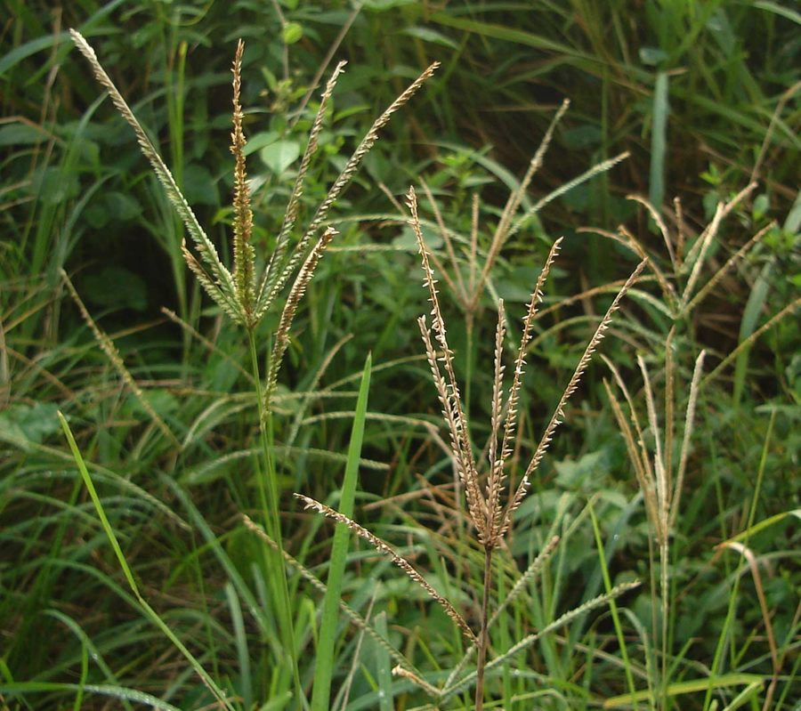

कोदई घासGoosegrass
Eleusine indica · Poaceae · FLR-0140

- Scientific name
- Eleusine indica (L.) Gaertn.
- Family
- Poaceae
- Hindi
- कोदई घास
- Local names
- kodai ghas, kodia, kodiya, malankuri, goosegrass
- Status here
- native
- IUCN
- not evaluated
- Review
- audited and independently read
When to look कब देखें
Present all year.
Uses and possibilities उपयोग और संभावनाएँ
Drawn from the documented uses in the profile below, where each is labelled traditional, current or a research lead. All uses →
कोदई घास / Goosegrass
Eleusine indica (L.) Gaertn. — Poaceae
कोदई घास — एक छोटी, सख़्त घास जो सड़कों के किनारे, खेतों में, और दबी हुई मिट्टी पर उगती है। तना छोटा, पाँच-दस सेंटीमीटर, पत्तियाँ कड़ी, सीधी। बरसात में बीज लगते हैं, शरद तक दाना तैयार हो जाता है। इसके बीज, हालाँकि छोटे, पक्षियों और जानवरों को खिलाते हैं। पशु-चारण में यह अच्छी घास नहीं मानी जाती पर ईंधन के लिए सूखी घास को बाँधकर ले जाते हैं।
Quick Identification त्वरित पहचान
| Feature | Description |
|---|---|
| Height | 0.3–0.6 m, low, creeping or ascending |
| Stems | Flattened, hairy at the base, ascending from soil |
| Leaves | Linear, 5–15 cm, 3–6 mm wide, flat, hairy or smooth |
| Inflorescence | Distinctive: 3–10 finger-like spikes radiating from the top of the stem, 2–8 cm long |
| Spikelets | Small, 3–4 mm, arranged along the spike axis |
| Grain | Tiny, 1–1.5 mm, dark brown or black |
Field tip: Look for a low, creeping grass with distinct finger-like spikes radiating from a single point at the stem top, resembling a bird's foot or a hand's fingers. Found in disturbed areas, paths, and field margins.
Morphology आकारिकी
Biometrics (typical measurements for the Gangetic plain):
| Measurement | Range |
|---|---|
| Plant height | 0.3–0.6 m |
| Leaf length | 5–15 cm |
| Leaf width | 3–6 mm |
| Spike length | 2–8 cm |
| Number of spikes | 3–10 per inflorescence |
| Grain length | 1–1.5 mm |
Root system: Fibrous roots arising from the base; not deep-rooting but adequate for establishment on compacted soil.
Stems (culms): Usually short, ascending or creeping, flattened, sparsely hairy, rooting at nodes in some forms. Multiple tillers form a spreading mat.
Leaves: Linear, flat, 5–15 cm long, 3–6 mm wide. Midrib is visible. The upper surface can be hairy or smooth; the lower surface is often waxy.
Inflorescence: The distinctive feature — a set of 3–10 finger-like spikes radiating from the apex of the main stem. Each spike is 2–8 cm long and contains many small spikelets arranged two-ranked (distichous).
Grain: Extremely small, enclosed in the glumes, dark brown to black. The surface is finely reticulate (netted pattern).
हिंदी: छोटा पौधा, पाँच-दस सेंटीमीटर। पत्ती कड़ी, सीधी। फूल पाँच-दस उँगलियों जैसे निकलती हैं। दाना बहुत छोटा।
Behaviour & Ecology व्यवहार और पारिस्थितिकी
A rapid-growing annual grass of tropical Africa and Asia, now pantropical. Eleusine indica is an aggressive colonizer of disturbed, compacted soil — paths, roadsides, and cultivated fallows. It thrives in areas where heavy foot traffic or livestock have compacted the soil, suppressing other plants. It is drought-tolerant once established and grows vigorously in the monsoon, reaching maturity within 60–90 days.
The plant's low stature and creeping habit allow it to escape mowing (it regrows from nodes). The tiny seeds are produced in vast numbers and are dispersed by wind, water, and animals.
The grain is eaten by small birds and rodents but is too small to be harvested profitably by humans. The dried plant provides dry-season forage for livestock.
हिंदी: यह घास दबी हुई मिट्टी पर जल्दी उगती है। सड़कों के किनारे आम है। पक्षी इसके दाने खाते हैं।
Life Cycle / Phenology जीवन चक्र
Eleusine indica is an annual grass — it completes its life cycle in a single season.
| Month | State | हिंदी |
|---|---|---|
| May–Jun | Sowing in nurseries or direct seeding | बीज बोना |
| Jul–Aug | Germination and vegetative growth | तेज़ बढ़ैती |
| Aug–Sep | Inflorescence emergence and flowering | फूल और बीज बनना |
| Sep–Nov | Grain ripening; harvest-ready | दाना पकना |
| Dec onwards | Dried plant remains; seed dispersal | सूखा तना |
Harvest: The plant is not traditionally harvested for grain due to the tiny seeds. Dried plants are sometimes collected and bound for fuel or fodder.
हिंदी: जून में बीज, अगस्त-सितंबर में फूल, सितंबर-नवंबर में दाना। ये तीन महीने का पौधा है।
Associated Species / Interactions संबंधित प्रजातियाँ
- Bird seed source: Small birds feed on the grain.
- Rodent habitat: The creeping habit and dense basal leaves provide shelter for small rodents.
- Livestock forage: Dried plants are used as supplementary fodder.
Pests and Diseases कीट और रोग
- Generally hardy: Few serious pests.
- Rust and leaf spot: Occasional fungal infections in very wet weather.
- Resistance: The plant's creeping habit and low stature reduce pest impact.
Agricultural / Human Relevance कृषि और मानव संबंध
Weed status. In agriculture, Eleusine indica is regarded as a weed in cultivated fields, competing with crops for moisture and nutrients. Its ability to thrive on compacted soil makes it a persistent problem in repeatedly ploughed fields.
Livestock forage. While not a preferred grass, dried plants are sometimes collected and fed to cattle and goats during the dry season. The nutritional quality is moderate.
Traditional knowledge. In some regions, the grass is collected for bundling as fuel or used as a bedding material for livestock.
Ecological value. The plant plays a role in early vegetation recovery on disturbed land, stabilizing soil on paths and providing pioneer cover before perennial grasses establish.
हिंदी: खेतों में कोदई एक खरपतवार मानी जाती है। पर सूखे घास को चारे में मिलाते हैं।
Expected Locally स्थानीय रूप से अपेक्षित
Not a field record. Written from published accounts for eastern Uttar Pradesh. No confirmed local sighting yet — if you have seen it, that is what the atlas needs.
अभी तक स्थानीय पुष्टि नहीं। यह विवरण प्रकाशित स्रोतों से है, किसी अवलोकन से नहीं।
Expected on disturbed ground, roadsides, and field margins throughout Basti district. The distinctive finger-like inflorescence makes it easy to identify during autumn.
Distribution वितरण
Global range: Native to Africa; widely distributed in tropical and subtropical regions globally.
In India: Found throughout the Indo-Gangetic plains and the Deccan, particularly in disturbed areas.
In Uttar Pradesh: Common in fields and roadsides throughout the state.
In Basti district / eastern UP: Expected in disturbed areas, field margins, and roadsides throughout the district.
Research Questions शोध प्रश्न
Anyone can investigate these | कोई भी इन प्रश्नों की जाँच कर सकता है
- Where is goosegrass most abundant in your area? / आपके इलाके में कोदई घास सबसे ज़्यादा कहाँ है? — Record locations: roadsides, field margins, or compacted paths.
- Which birds feed on the grain? — Observe a grain-bearing plant during the day; record which species visit.
- Can the dried plant be used as fuel or fodder? — Collect, dry, and test for use as kindling or animal feed.
- How quickly does it regrow after grazing or mowing? — Graze or mow a patch; observe regrowth rate over two weeks.
- How many seeds does a single plant produce? — Collect ripe inflorescences, thresh, and count the grain. / एक पौधे में कितने दाने होते हैं?
Similar Species मिलती-जुलती प्रजातियाँ
| Species | How to tell apart | हिंदी |
|---|---|---|
| Crowfoot Grass (Dactyloctenium aegyptium) | Spikes are strongly curved (claw-like), not straight; spikelets have spines | क्राउनफुट — बेंट स्पाइक, काँटों वाली |
| Dactylis glomerata (Cocksfoot) | Larger plant (0.6–1.2 m); clustered spikes at the top; larger spikelets | डैक्टिलिस — बड़ा पौधा; बड़े गुच्छे |
| Thatch Grass (Imperata cylindrica) | Much taller (0.8–1.5 m); silvery plume; solid stem | छीर — बहुत बड़ा; सफेद फूल |
Field rule: A low, spreading grass with 3–10 straight finger-like spikes radiating from the stem top, tiny dark grain, and found on compacted disturbed soil = Eleusine indica (goosegrass).
Taxonomy & Classification वर्गीकरण
Original description. Originally described by Linnaeus as Cynosurus indicus and transferred to Eleusine by Gaertner. The genus Eleusine contains about 9 species, mostly African, of which E. indica is the most widespread.
Subspecies. Monotypic — no subspecies are currently recognised.
Family and order placement. Poaceae, subfamily Eragrostoideae, tribe Cynodonteae. The genus is closely related to Cynodon (bermuda grass) and Chloris (finger grass).
Phylogenetic notes. Eleusine indica belongs to a clade of Old World tropical grasses adapted to disturbed and arid habitats.
IUCN status rationale. Not evaluated. Widespread with no conservation concerns; locally abundant.
Photo Gallery फोटो गैलरी
Photos needed आवश्यक फोटो
- [ ] Low grass plant showing the spreading growth habit
- [ ] Inflorescence showing the finger-like spikes
- [ ] Seeds and mature plant in autumn
References संदर्भ
- Gaertner, J. (1788). De Fructibus et Seminibus Plantarum. Stuttgart.
- Hooker, J.D. (1897). Flora of British India, vol. 7. L. Reeve & Co., London.
- Bor, N.L. (1960). The Grasses of Burma, Ceylon, India and Pakistan. Pergamon Press.
- Noltie, H.J. (2000). Flora of Bhutan, vol. 3. Royal Botanic Garden, Edinburgh.
- Botanical Survey of India — Flora of Uttar Pradesh (2012).
- GBIF Occurrence Data — Eleusine indica, India (2015–2026).
Source file: species/flora/grasses/goosegrass.md